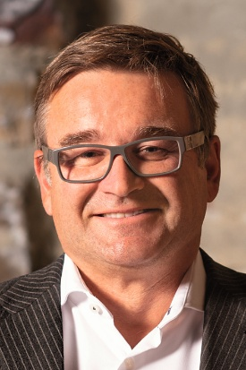

Plenary Talk 1
A European View on Humanoid Safety and Security
Thomas Pilz, Pilz GmbH & Co. KG
Thursday, December 3, 2026 · 16:40–17:40
Two plenary talks in the Conference Hall at INTEX Osaka.
Both plenary talks are held in the Conference Hall at INTEX Osaka. Times are local (Japan Standard Time). See the program at a glance for the full schedule.
A European View on Humanoid Safety and Security
Thomas Pilz, Pilz GmbH & Co. KG
Thursday, December 3, 2026 · 16:40–17:40
Toward the Establishment of Positive Safety
Masao Mukaidono, IGSAP · Meiji University
Friday, December 4, 2026 · 09:20–10:20

Pilz GmbH & Co. KG, Managing Partner
Humanoid Robotics as well as Service Robotics has its roots in Japan, Korea and China. Here researchers enjoyed the freedom and marketplace to introduce a new species of robots. The key enabler of this technology is so-called autonomy and the ability to integrate artificial intelligence into a machine that allows the machine to adapt to the environment it is put in. As a result, we see how robots can climb mountains carrying an egg or a watermelon, how robots do 100-meter sprints or support a customer at check in in a hotel or when ordering a meal in a restaurant.
All this progress is intended to increase the well-being of us humans. So far so good — but how about Safety? How about Security? How about regulations for those that develop and use such machines? These questions have heavily influenced the progress of this technology in Europe. Here the approach “regulate first, develop later” has generated a list of European laws that now make those who develop for the European Market rethink the value of Safety and Security. With safety, we have had good experience in Europe, whether it is in the public sector, the agricultural sector, the medical sector or the industrial sector. We have learned how to meet the requirement that a machine shall not harm a human, intentionally or accidentally. We have developed concepts to allow us to operate industrial robots safely, resulting in well-being at the workplace.
But how about AI and Safety? How about Safety when you cannot calculate anymore the percentage of an undetected dangerous failure, because humans do not understand how AI comes to its results? This is a huge challenge when one knows that stability of a two-legged humanoid, a safety function, today is only possible when AI is used. But only in Europe because there NIS 2, AI Act, CRA and Machine Safety Act give the legal framework that needs to be followed when developing and bringing autonomous products to market like Service Robots, whether they have the humanoid form or the shape of an animal or a sweet little scooter.
International Standards are being drafted as we speak in order to give manufacturers and developers guidance on how to meet legal compliance. Once met, we can again rest assured that we have safe machines surrounding us in public life and work life with the expectation of safety fostering well-being.
With this achievement we now need to look at Security — the only protection against malicious humans who want to destroy the wealth and well-being of modern digital societies. Here is the true challenge to keep humans secure so well-being can prosper!
The European answer to this is NIS2 and CRA. For the developer, it means that now Security and its effects of availability and reaction times need to be considered. A challenge that used to be the challenge of Safety alone.
Now Safety has a running mate: Security. Only with both functions implemented properly can we trust that the new era of autonomous machines will promise safety and well-being to society as a whole.
The Institute of Global Safety Promotion (IGSAP), Honorary Chairman
Meiji University, Professor Emeritus
Railway Technical Research Institute, Chairman
He has received many other honors and awards.
Safety activities, including those in occupational safety and health, have traditionally focused on reducing risks and preventing accidents through technical, organizational, and human approaches. These efforts seek to reduce undesirable outcomes, representing a movement from negative conditions toward zero. Although positive approaches have also been pursued in safety practice, this lecture proposes the concept of “Positive Safety” as a framework that integrates both approaches.
In this lecture, safety activities aimed at reducing hazards and risks are termed “Foundational Safety,” while those aimed at creating desirable conditions and values are termed “Creative Safety.” Specifically, Creative Safety seeks to create conditions through safety activities in which people can exercise their abilities with a sense of agency, grow, experience peace of mind, and find fulfillment in their work. This represents a movement from zero toward positive conditions. Here, “zero” is a conceptual reference point indicating a state in which the risk of harm is at an acceptable level; it does not mean zero risk. This lecture proposes a systematic framework for Positive Safety that integrates Foundational Safety and Creative Safety.
Positive Safety expands the concept of safety in two directions. The first incorporates Creative Safety alongside Foundational Safety. The second broadens its scope from physical safety to four domains of safety-related value: safety, health, peace of mind, and well-being, with physical safety as their foundation.
While individual technologies that enhance positive outcomes are advancing, further research is needed to develop a framework for integrating, designing, and evaluating them from the perspective of Positive Safety. Rapid advances in information and communication technology (ICT) offer new opportunities to pursue this research. In this context, Collaborative Safety provides an important link to Positive Safety. It seeks to ensure safety through mutual information sharing and coordination among humans, machines, and their environment, and is addressed in the recently published IEC Guide 127:2026. For example, human–robot collaboration can reduce hazards while also enhancing people’s freedom of action and agency.
The ultimate purpose of safety is to enable people to work and live in a safe environment, in good health, with peace of mind, and with a sense of happiness and well-being. Developing technologies for Positive Safety has the potential to enhance workers’ well-being while contributing to both safety and productivity.
Keywords: positive safety, collaborative safety, foundational safety, creative safety, peace of mind, well-being